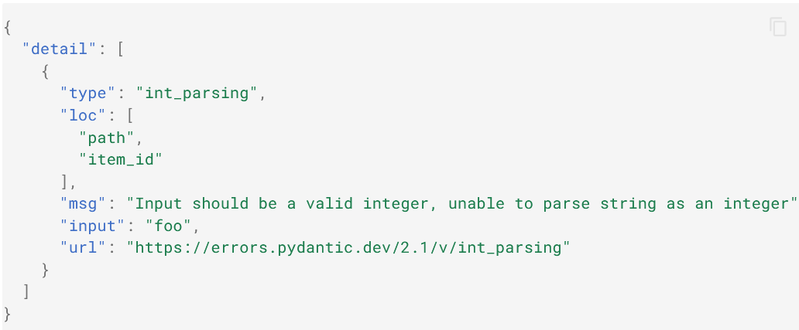

FastAPI documentation#
Created by: juliana alejandra gutierrez castro Created time: September 27, 2024 5:12 PM
Basic usage#
First steps#
import
FastAPI: from fastapi import FastAPI
from fastapi import FastAPI
app = FastAPI()
@app.get("/")
async def root():
return {"message": "Hello World"}
---------------------------------------------------------------------------
ModuleNotFoundError Traceback (most recent call last)
Cell In[1], line 1
----> 1 from fastapi import FastAPI
3 app = FastAPI()
5 @app.get("/")
6 async def root():
ModuleNotFoundError: No module named 'fastapi'
FastAPI is a Python class that provides all the functionality for your API.
create a
FastAPI“instance”: app = FastAPI()
Here the app variable will be an “instance” of the class FastAPI.
This will be the main point of interaction to create all your API.
create a path operation: @app.get(“/”)
Path#
“Path” here refers to the last part of the URL starting from the first / after https://.
So, in a URL like:
https://example.com/items/foo
…the path would be:
/items/foo
When building APIs, you normally use these specific HTTP methods to perform a specific action.
Normally you use:
POST: to create data.GET: to read data.PUT: to update data.DELETE: to delete data.
So, in OpenAPI, each of the HTTP methods is called an “operation”.
We are going to call them “operations” too.
Define a path operation decorator#
The @app.get("/") tells FastAPI that the function right below is in charge of handling requests that go to:
the path
/using a
getoperation
define the path operation function:
async def root():This is our “path operation function”:
path: is
/.operation: is
get.function: is the function below the “decorator” (below
@app.get("/")).
This is a Python function.
It will be called by FastAPI whenever it receives a request to the URL “
/” using aGEToperation.In this case, it is an
asyncfunction.
from fastapi import FastAPI
app = FastAPI()
@app.get("/")
async def root():
return {"message": "Hello World"}
return the content
You can return a dict, list, singular values as str, int, etc.
You can also return Pydantic models (you’ll see more about that later).
Recap#
Import
FastAPI.Create an
appinstance.Write a path operation decorator using decorators like
@app.get("/").Define a path operation function; for example,
def root(): ....Run the development server using the command
fastapi dev.
Path Parameters#
You can declare path “parameters” or “variables” with the same syntax used by Python format strings:
from fastapi import FastAPI
app = FastAPI()
@app.get("/items/{item_id}")
async def read_item(item_id):
return {"item_id": item_id}
The value of the path parameter item_id will be passed to your function as the argument item_id.
So, if you run this example and go to http://127.0.0.1:8000/items/foo, you will see a response of:
{"item_id":"foo"}
Path parameters with types#
You can declare the type of a path parameter in the function, using standard Python type annotations:
from fastapi import FastAPI
app = FastAPI()
@app.get("/items/{item_id}")
async def read_item(item_id: int):
return {"item_id": item_id}
In this case, item_id is declared to be an int.
Data conversion#
If you run this example and open your browser at http://127.0.0.1:8000/items/3, you will see a response of:
{"item_id":3}
Data validation#
But if you go to the browser at http://127.0.0.1:8000/items/foo, you will see a nice HTTP error of:

because the path parameter item_id had a value of "foo", which is not an int.
The same error would appear if you provided a float instead of an int, as in: http://127.0.0.1:8000/items/4.2
Documentation#
And when you open your browser at http://127.0.0.1:8000/docs, you will see an automatic, interactive, API documentation like:

Pydantic#
All the data validation is performed under the hood by Pydantic, so you get all the benefits from it. And you know you are in good hands.
You can use the same type declarations with str, float, bool and many other complex data types.
Order matters#
When creating path operations, you can find situations where you have a fixed path.
Like /users/me, let’s say that it’s to get data about the current user.
And then you can also have a path /users/{user_id} to get data about a specific user by some user ID.
Because path operations are evaluated in order, you need to make sure that the path for /users/me is declared before the one for /users/{user_id}:
from fastapi import FastAPI
app = FastAPI()
@app.get("/users/me")
async def read_user_me():
return {"user_id": "the current user"}
@app.get("/users/{user_id}")
async def read_user(user_id: str):
return {"user_id": user_id}
Otherwise, the path for /users/{user_id} would match also for /users/me, “thinking” that it’s receiving a parameter user_id with a value of "me".
For example: The following code is ordered with the function “read_user_me()” as the first call and “read_user()” as the second call. As a result, for each time “me” is typed as a path parameter, the server will show us the “user_id”: “the current user” string response.


Example 2: Otherwise, for every time we type “me” as a path parameter, we will get the string “me” as a response.


Similarly, you cannot redefine a path operation:
from fastapi import FastAPI
app = FastAPI()
@app.get("/users")
async def read_users():
return ["Rick", "Morty"]
@app.get("/users")
async def read_users2():
return ["Bean", "Elfo"]
The first one will always be used since the path matches first
Predefined values with Enum#
If you have a path operation that receives a path parameter, but you want the possible valid path parameter values to be predefined, you can use a standard Python Enum.
Create an
Enumclass
Import Enum and create a sub-class that inherits from str and from Enum.
from enum import Enum
from fastapi import FastAPI
class ModelName(str, Enum):
alexnet = "alexnet"
resnet = "resnet"
lenet = "lenet"
Then create class attributes with fixed values, which will be the available valid values.
Declare a path parameter
Then create a path parameter with a type annotation using the enum class you created (ModelName):
from enum import Enum
from fastapi import FastAPI
class ModelName(str, Enum):
alexnet = "alexnet"
resnet = "resnet"
lenet = "lenet"
@app.get("/models/{model_name}")
async def get_model(model_name: ModelName):
pass
3. Compare enumeration members:
You can compare it with the enumeration member in your created enum ModelName
from enum import Enum
from fastapi import FastAPI
class ModelName(str, Enum):
alexnet = "alexnet"
resnet = "resnet"
lenet = "lenet"
@app.get("/models/{model_name}")
async def get_model(model_name: ModelName):
if model_name is ModelName.alexnet:
return {"model_name": model_name, "message": "Deep Learning FTW!"}
if model_name.value == "lenet":
return {"model_name": model_name, "message": "LeCNN all the images"}
Get the enumeration value
You can get the actual value (a str in this case) using model_name.value, or in general, your_enum_member.value:
from enum import Enum
from fastapi import FastAPI
class ModelName(str, Enum):
alexnet = "alexnet"
resnet = "resnet"
lenet = "lenet"
@app.get("/models/{model_name}")
async def get_model(model_name: ModelName):
if model_name is ModelName.alexnet:
return {"model_name": model_name, "message": "Deep Learning FTW!"}
if model_name.value == "lenet":
return {"model_name": model_name, "message": "LeCNN all the images"}
return {"model_name": model_name, "message": "Have some residuals"}
Return enumeration members
You can return enum members from your path operation, even nested in a JSON body (e.g. a dict).
They will be converted to their corresponding values (strings in this case) before returning them to the client:
Examples:#
Example 1: ____________________________________________________________________________________________

Example 2:_____________________________________________________________________________________________

Example 3:_____________________________________________________________________________________________

Example 4 (with error):________________________________________________________________________________

Path parameters containing paths#
Let’s say you have a path operation with a path /files/{file_path}.
But you need file_path itself to contain a path, like home/johndoe/myfile.txt.
So, the URL for that file would be something like: /files/home/johndoe/myfile.txt.
Path convertor#
Using an option directly from Starlette you can declare a path parameter containing a path using a URL like:
In this case, the name of the parameter is file_path, and the last part, :path, tells it that the parameter should match any path.
So, you can use it with:
from fastapi import FastAPI
app = FastAPI()
@app.get("/files/{file_path:path}")
async def read_file(file_path: str):
return {"file_path": file_path}
Example:


Recap#
With FastAPI, by using short, intuitive and standard Python type declarations, you get:
Editor support: error checks, auto-completion, etc.
Data “”
parsing
Data validation
API annotation and automatic documentation
And you only have to declare them once.
That’s probably the main visible advantage of FastAPI compared to alternative frameworks (apart from the raw performance).
Query Parameters#
When you declare other function parameters that are not part of the path parameters, they are automatically interpreted as “query” parameters.
from fastapi import FastAPI
app = FastAPI()
fake_items_db = [{"item_name": "Foo"}, {"item_name": "Bar"}, {"item_name": "Baz"}]
@app.get("/items/")
async def read_item(skip: int = 0, limit: int = 10):
return fake_items_db[skip : skip + limit]
The query is the set of key-value pairs that go after the ? in a URL, separated by & characters.
For example, in the URL:
The query parameters are:
skip: with a value of0limit: with a value of10
As they are part of the URL, they are “naturally” strings.
But when you declare them with Python types (in the example above, as int), they are converted to that type and validated against it.
All the same process that applied for path parameters also applies for query parameters
Example 1:

Example 2:

Example 3:

Defaults#
As query parameters are not a fixed part of a path, they can be optional and can have default values.
In the example above they have default values of skip=0 and limit=10.
So, going to the URL:
would be the same as going to:
But if you go to, for example:
The parameter values in your function will be:
skip=20: because you set it in the URLlimit=10: because that was the default value
Optional parameters#
The same way, you can declare optional query parameters, by setting their default to None:
from fastapi import FastAPI
app = FastAPI()
@app.get("/items/{item_id}")
async def read_item(item_id: str, q: str | None = None):
if q:
return {"item_id": item_id, "q": q}
return {"item_id": item_id}
In this case, the function parameter q will be optional, and will be None by default.
Example 1:

Example 2:

Query parameter type conversion#
You can also declare bool types, and they will be converted:
from fastapi import FastAPI
app = FastAPI()
@app.get("/items/{item_id}")
async def read_item(item_id: str, q: str | None = None, short: bool = False):
item = {"item_id": item_id}
if q:
item.update({"q": q})
if not short:
item.update(
{"description": "This is an amazing item that has a long description"}
)
return item